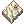
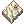

Magical Booster
 Magical Booster [1] is a powerful middle headgear that can be obtained by doing a quest at the The Wyvern.
Magical Booster [1] is a powerful middle headgear that can be obtained by doing a quest at the The Wyvern.
Chief Engineer will give you a quest about the headgear that will surpass the outdated New Wave Sunglasses made by his brother.
Magical Booster
| Magical Booster
| ||
|---|---|---|

|
|
|


Enchanting

After obtaining one, it can be further enchanted by trading 100,000 zeny plus  1 Violet Gem and
1 Violet Gem and  1 Rose Gem for  1 Booster Amplifier at the Dante's Shop.
1 Rose Gem for  1 Booster Amplifier at the Dante's Shop.
When Booster Amplifier is used, it will always add 2 possible enchants from the table below even if your Magical Booster [1] is already enchanted with anything.
| Enchant #1 | Min~Max | Enchant #2 | Min~Max |
|---|---|---|---|
| STR | 1 | STR | 1 |
| AGI | 1 | AGI | 1 |
| VIT | 1 | VIT | 1 |
| INT | 1 | INT | 1 |
| DEX | 1 | DEX | 1 |
| LUK | 1 | LUK | 1 |
| MAX HP | 1 ~ 2 % | Increases Healing Skill | 3 ~ 10 % |
| MAX SP | 1 ~ 2 % | Received Heal Effectiveness | 2 ~ 7 % |
| ATK | 3 ~ 5 | ATK | 1 ~ 3 % |
| MATK | 3 ~ 5 | MATK | 1 ~ 3 % |
| HIT | 5 ~ 10 | Reduces Variable Cast Time | 3 ~ 5 % |
| CRIT | 1 ~ 3 | Increases Long Range Damage | 1 ~ 4 % |
| DEF | 10 ~ 20 | ASPD | 1 |
| Reduces After Cast Delay | 1 ~ 2 % | Reduces After Cast Delay | 2 ~ 3 % |
| FLEE | 5 ~ 20 | ||
| MDEF | 3 ~ 5 |
Headgear Awakening
Magical Booster [1] can be awakened and become  Crimson Magical Booster [1] through a Headgear Awakening quest by talking to the Archaeologist.
Crimson Magical Booster [1] through a Headgear Awakening quest by talking to the Archaeologist.
NOTE - The enchants you've in the Magical Booster are kept in the Crimson Magical Booster when it's awakened, they don't disappear.
| Monster Hunting | ||
|---|---|---|
| Low Rank Hunts • High Rank Hunts | ||
| Hunting Mechanics | Rage • Hate • Skills • Alterations | |
| Player Roles | Tank • Damage • Healer • Utility | |
| Monsters |
1-Star Hunts | Garanth • Nyia |
| 2-Star Hunts | Garronath • Nysori | |
| 3-Star Hunts | Angnar • Zaedronath | |
| Unreleased | Sybaris • Vakaris • Hrungnir • Anko & Mako | |
| Regular Monsters | Ambient Monsters | |
| Rewards | Shadow Gear (Low Rank, High Rank (1/2-star), Angnar, Zaedronath) • Shadow Gear Refinement
Archangel Wings • Fallen Angel Wings • Ancient Hero • Temporal Armors • Violet Halo • Magical Booster • Bio Weapon Helms | |
| Gathering & Combinations | Mining • Fishing • Foraging • Combinations | |
| Lore | The Savage Coast • The Wyvern • Astrid • Seruel • Delphina • Sain • Will • Reidin Kurs | |